The game of mind and dice
Uncertainty Quantification
Computer science is more than just a metaphor for the world of information processing. Its ambition is all-encompasing in aiming to explain every kind of information processing that is possible, […].
@Valiant2024
Rationality
I - Toss a coin. If it comes up heads you win \(100\$\), and if it comes up tails you win nothing.
or
II - Get 46$ for sure.
@Kahneman2013
Ellsberg paradox
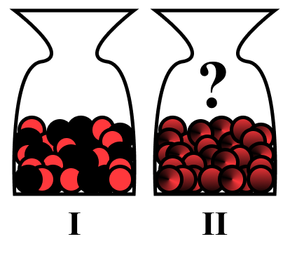
I - 50 red, 50 black
II - ? red \(+\) ? black \(= 100\)
@Ellsberg1961
- Red I, Black I or indifferent? - Indifferent
- Red II, Black II or indifferent? - Indifferent
- Red I or Red II? - Red I \(\succeq\) Red II
- Black I or Black II? - Black I \(\succeq\) Black II
\[ p_{R_I} > p_{R_{II}} \]
\[ p_{B_I} > p_{B_{II}} \]
\[ \iff 1 - p_{R_I} > 1 - p_{R_{II}} \]
\[ \iff p_{R_{I}} < p_{R_{II}} \]
Imprecise Probabilities
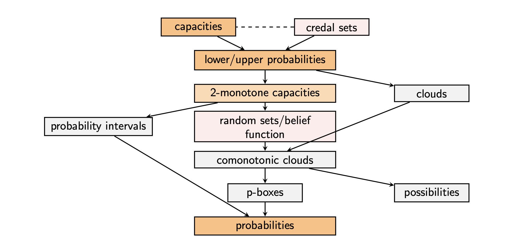
Imprecise Probabilities
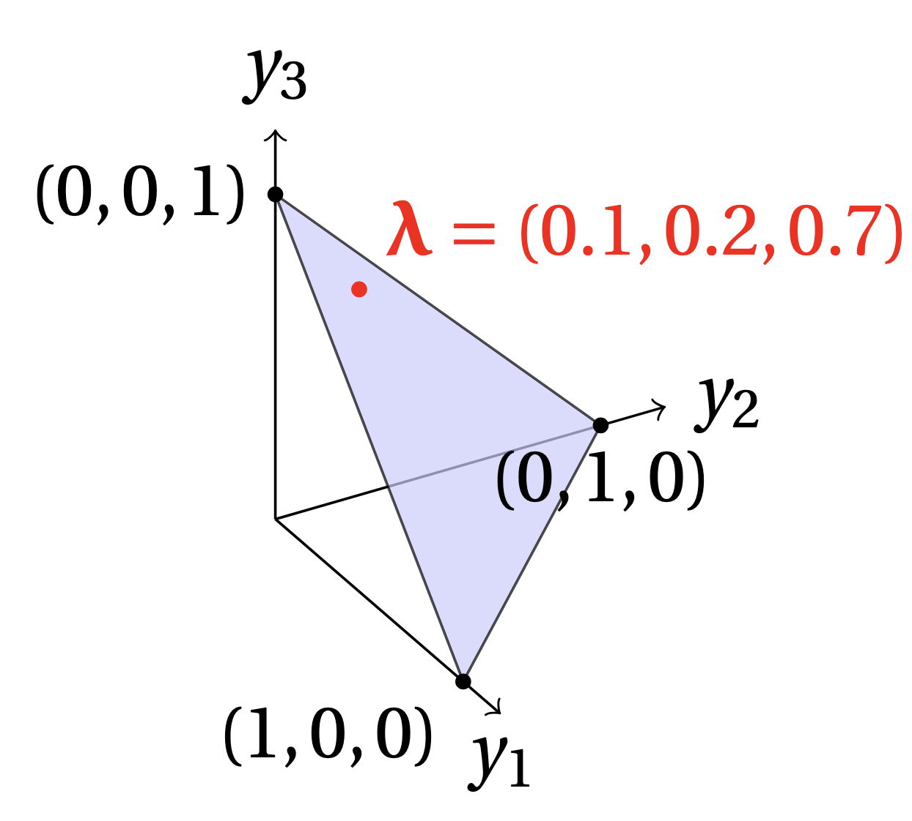
Credal sets \(\mathcal{P}\) [@Walley1991]:
- Closed and convex sets of probability distributions \(\forall P_1, P_2 \in \mathcal{P}\) \[\{ \lambda P_1 + (1 - \lambda)P_2 \mid \lambda \in [0, 1]\} \subseteq \mathcal P\]
- For finite space, represented as simplex \(\Delta^{\lvert \Omega \rvert - 1} := \{ \boldsymbol{\lambda} \in \mathbb{R}^{\lvert \Omega \rvert}_{\ge 0} \mid \sum_{i=1}^{\lvert \Omega \rvert}\lambda_i = 1\}\)
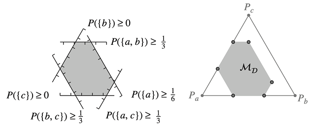
Imprecise Probabilities
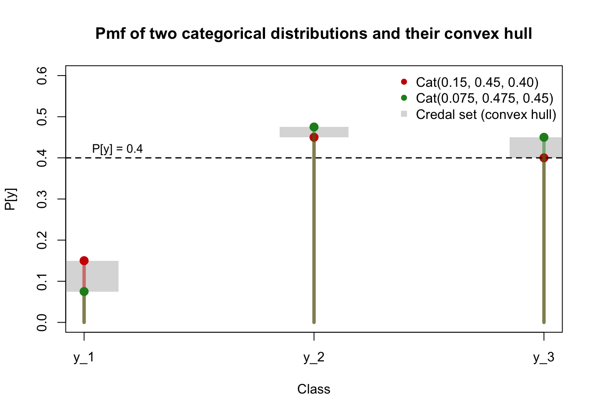
Credal sets \(\mathcal{P}\) [@Walley1991]:
- Closed and convex sets of probability distributions
Lower/upper probabilities
\[ \bar{\mathbb{P}} \left[ A\right] = \sup_{P \in \mathcal{P}} P(A) \] \[ \underline{\mathbb{P}} \left[ A\right] = \inf_{P \in \mathcal{P}} P(A) \] \(\forall A \in \sigma(\Omega)\) [@ihds]
Imprecise Probabilities
Based on @kolmogorov1950:
- \((\mathcal{\Omega}, \sigma(\mathcal{\Omega}), \mathbb{P})\) is a probability space
- \(\mathbb{P}[A] \ge 0 \quad \forall A \in \sigma(\mathcal{\Omega})\)
- \(\mathbb{P}[\mathcal{\Omega}] = 1\)
- \(\mathbb{P}\left[ \bigcup_{i=1}^\infty A_i \right] = \sum_{i=1}^\infty \mathbb{P}[A_i]\) where \(A_i \in \sigma(\Omega)\) are disjoint
@Choquet1954:
Let \((\mathcal{\Omega}, \sigma(\mathcal{\Omega}))\) be a measurable space (\(\mathcal{\Omega} \neq \emptyset\))
Set function \(\nu: \sigma(\mathcal{\Omega}) \to [0,1]\) is a (Choquet) capacity iff:
- \(\nu(\emptyset) = 0\)
- \(\nu(\mathcal{\Omega}) = 1\)
- \(\forall A, B \in \sigma(\mathcal{\Omega}), A\subseteq B\) \(\implies \nu(A) \le \nu(B)\)
\[ \begin{align*} &1 = \mathbb{P}[\mathcal{\Omega}] = \mathbb{P}[\emptyset] + \mathbb{P}[\emptyset^C] \\ &\implies \mathbb{P}[\emptyset] = 0 \\ &\mathbb{P}[B]= \mathbb{P}[(B\setminus A) \cup A] \\ &= \mathbb{P}[B\setminus A] + \mathbb{P}[A] \end{align*} \]
Imprecise Probabilities: DST
- Set function \(\nu: \sigma(\mathcal{\Omega}) \to [0,1]\) is a (Choquet) capacity iff:
- \(\nu(\emptyset) = 0\)
- \(\nu(\mathcal{\Omega}) = 1\)
- \(\forall A, B \in \sigma(\mathcal{\Omega}), A\subseteq B\) \(\implies \nu(A) \le \nu(B)\)
@Dempster1967 and @Shafer1976
- \(m: 2^\Omega \to [0, 1]\)
- \(m (\emptyset) = 0\) and \(\sum_{A \in 2^\Omega} m(A) = 1\)
- \(\text{Bel}(A) = \sum_{B\subseteq A} m(B)\) \(=\underline{P}\)
- \(\text{Pl}(A) = \sum_{B\cap A \neq \emptyset} m(B)\) \(=\bar{P}\)
- \(\text{Bel}(A) \le \text{Pl}(A)\)
\[\text{Pl}(A) = 1 - \text{Bel}(A^C)\]
2-monotonicity: \(\forall A_1, A_2 \in 2^\Omega\) \[ \begin{align*} \nu(A_1 \cup A_2) \ge \nu(A_1) &+ \nu(A_2) \\ & - \nu(A_1 \cap A_2) \end{align*} \]
Imprecise Probabilities: DST
- Red I, Black I or indifferent? - Indifferent
- Red II, Black II or indifferent? - Indifferent
- Red I or Red II? - Red I \(\succeq\) Red II
- Black I or Black II? - Black I \(\succeq\) Black II
- \(m: 2^\Omega \to [0, 1]\)
- \(m (\emptyset) = 0\) and \(\sum_{A \in 2^\Omega} m(A) = 1\)
- \(\text{Bel}(A) = \sum_{B\subseteq A} m(B) =\underline{P}\)
- \(\text{Pl}(A) = \sum_{B\cap A \neq \emptyset} m(B) =\bar{P}\)
- \(\text{Bel}(A) \le \text{Pl}(A)\)
- \(\text{Pl}(A) = 1 - \text{Bel}(A^C)\)
\[m_I(\{R\}) = m_I(\{B\}) = 0.5\]
\[m_{II}(\{ R, B\}) = 1.0\]
| Bet | Mass | Bel | Pl |
|---|---|---|---|
| Red I | \(0.5\) | \(\boldsymbol{0.5}\) | \(0.5\) |
| Black I | \(0.5\) | \(0.5\) | \(0.5\) |
| RI or BI | \(0.0\) | \(1.0\) | \(1.0\) |
| Red II | \(0.0\) | \(\boldsymbol{0.0}\) | \(1.0\) |
| Black II | \(0.0\) | \(0.0\) | \(1.0\) |
| RII or BII | \(1.0\) | \(1.0\) | \(1.0\) |
Uncertainty decomposition
aleatoric
(irreducible, conflict)
epistemic
(reducible, non-specifity)
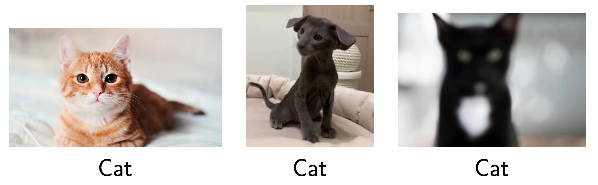
total
\(TU(\mathcal{P}) = AU(\mathcal{P}) + EU(\mathcal{P})\)

Uncertainty decomposition
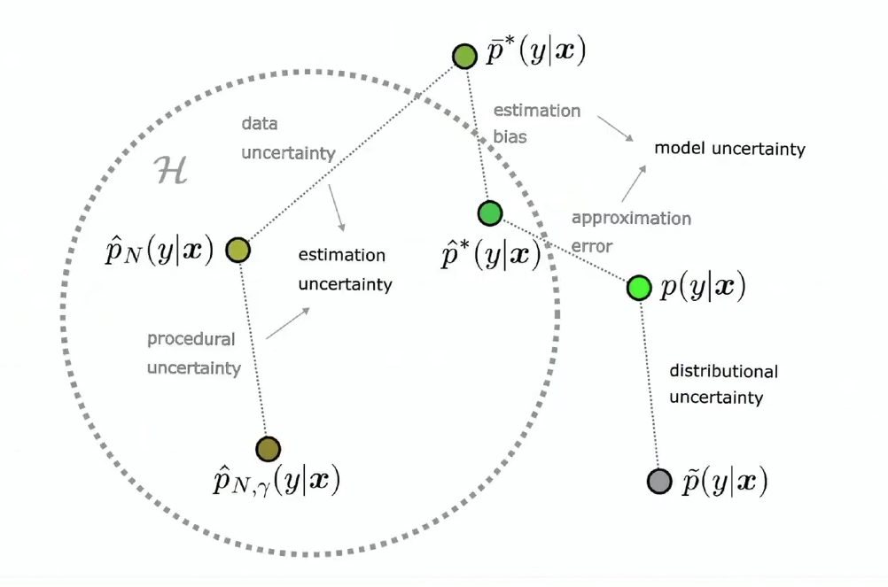
Uncertainty decomposition
- Shannon entropy [@Shannon1948]: \(H(P) = - \mathbb{E}_P \left[ \log_2 P(X)\right]\)
- Lower and upper Shannon entropies [@Abelln2006]: \[\underline{H}(\mathcal{P}) = \inf_{P \in \mathcal{P}} H(P)\] \[\bar{H}(\mathcal{P}) = \sup_{P \in \mathcal{P}} H(P)\]
\[ TU(\mathcal{P}) = AU(\mathcal{P}) + EU(\mathcal{P})\]
\[ \bar{H}(\mathcal{P}) = \underline{H}(\mathcal{P}) + (\bar{H}(\mathcal{P}) - \underline{H}(\mathcal{P}))\]
Uncertainty decomposition
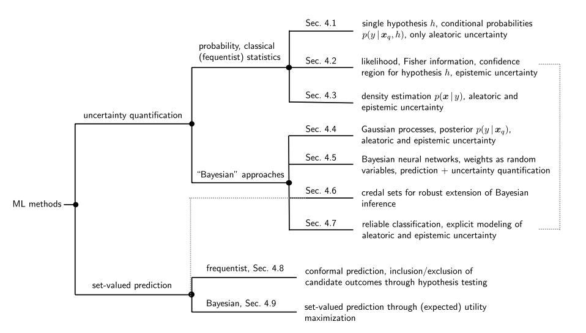
Imprecise Probabilistic ML
Conformal Prediction (CP)
- Introduced by @VladimirVovk2005
- \(\mathcal{D}_\text{cal} = \{ (X_1, Y_1), (X_2, Y_2), \dots, (X_n, Y_n) \} \subseteq \mathcal{X} \times \mathcal{Y}\)
- Key assumption: \(\mathcal{D}_\text{cal} \cup (X_{n+1}, Y_{n+1})\) is exchangeable
- \(s: \mathcal{X} \times \mathcal{Y} \to [0, 1]\) - (non)conformity function
- \(\alpha\) - user specified coverage level
- Form a prediction set \(\mathcal{C}(X_{n+1}) = \{y \in \mathcal{Y} : s(X_{n+1}, y) \ge \tau \}\) where \(\tau = q(\{s(x, y) \mid (x, y) \in \mathcal{D}_\text{cal}\}, \alpha)\)
Conformal Prediction (CP)
- Form a prediction set \(\mathcal{C}(X_{n+1}) = \{y \in \mathcal{Y} : s(X_{n+1}, y) \ge \tau \}\) where \(\tau = q(\{s(x, y) \mid (x, y) \in \mathcal{D}_\text{cal}\}, \alpha)\)
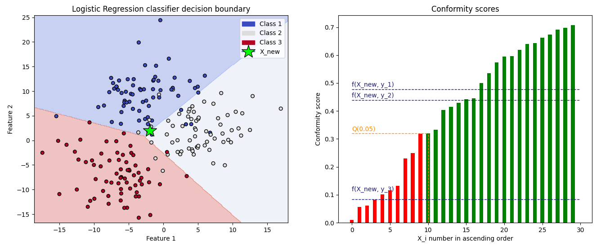
Conformal Prediction (CP)
Statistical guarantee: \[\mathbb{P}\left[ Y_{n+1} \in \mathcal{C}\left(X_{n+1}\right) \right] \ge 1-\alpha\]
Application: medical imaging
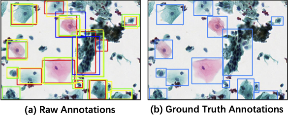
Imprecise Probabilistic CP
- @caprio2025
- \(\mathcal{D}_\text{cal} = \{ (X_1, \boldsymbol{\Lambda_1}), (X_2, \boldsymbol{\Lambda_2}), \dots, (X_n, \boldsymbol{\Lambda_n}) \} \subseteq \mathcal{X} \times \Delta^{K-1}\)
- \(\implies \mathcal{C}(X_{n+1}) = \{ \lambda \in \Delta^{K-1}:S(X_{n+1}, \lambda) \ge \tau \}\) plausibility region
- \(S(x, \boldsymbol{\lambda}) = \sum_{i=1}^K \lambda_i s(x, k_i)\)
- \(\mathcal{P} = \{\text{Cat}(\lambda) : \lambda \in \mathcal{C}(X_{n+1}) \}\) credal region
Statistical guarantee: \[\mathbb{P}\left[ \text{Cat}\left(\Lambda_{n+1}\right) \in \mathcal{P}\right] \ge 1-\alpha\]
Key takeaways
- Probability theory and statistics are an incredibly interesting phenomena
- WEWTYIW principle - “Why Everything We Teach You Is Wrong”
- Kolmogorovian axiomatisation is actually not enough when reasoning about uncertainty \(\implies\) we need new models (IPs)
- Uncertainty can be aleatoric and epistemic
- Conformal Prediction is actually magical
blackbox - We need to teach AI about uncertainty
References
Thank you for attention!
Any questions?
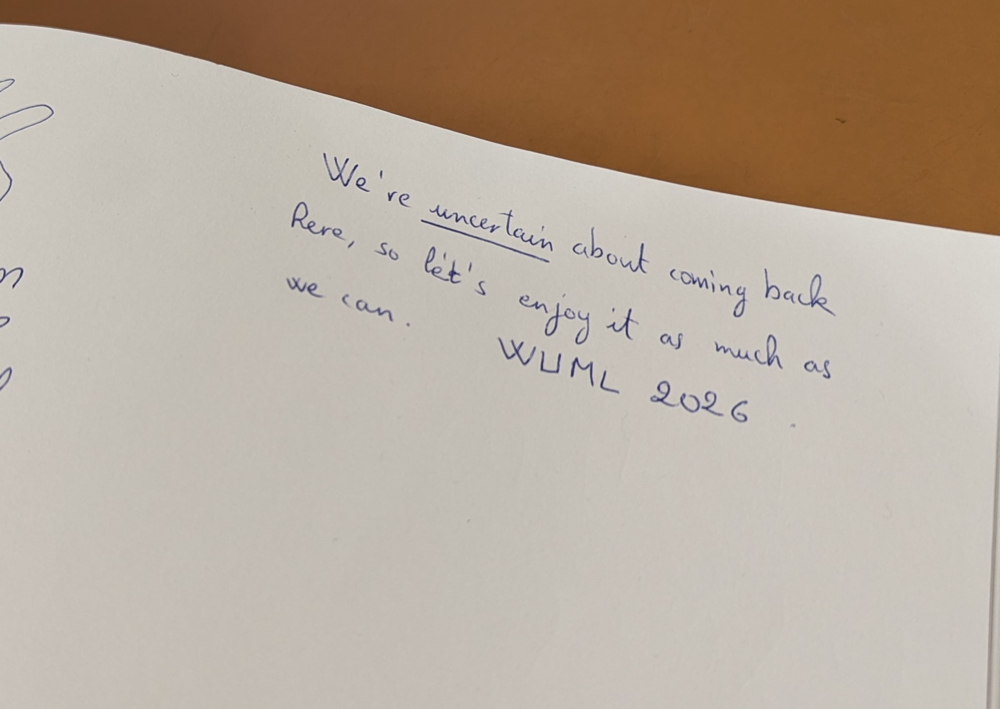
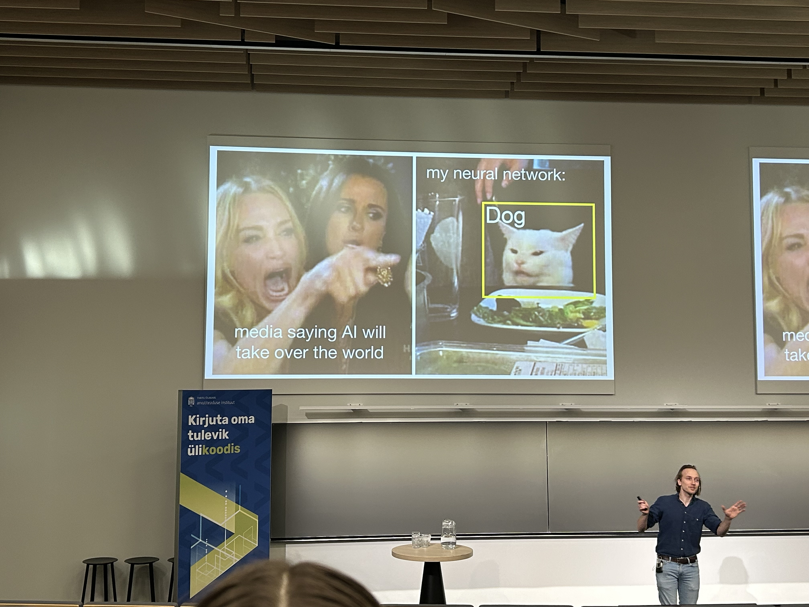